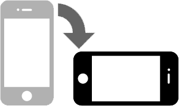

Je m'occupe également de la gestion d'un serveur web de partage de données...
J'ai également mis en place un serveur webradio!
Mon Serveur Perso
Je lis de revues d'informatique, Equitation, Science & Vie
Ainsi que des romans plutôt fantastique & Science-Fiction

Veuillez positionner votre appareil en mode Paysage ; ou bien élargir la fenêtre de votre navigateur.